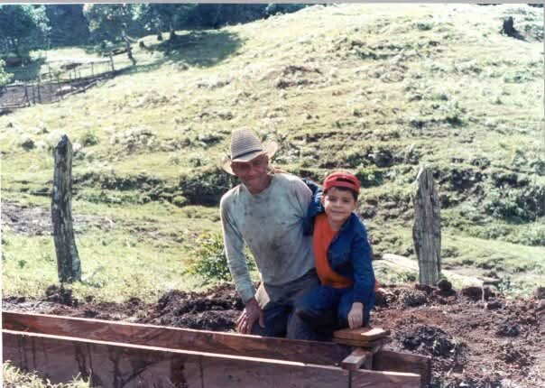
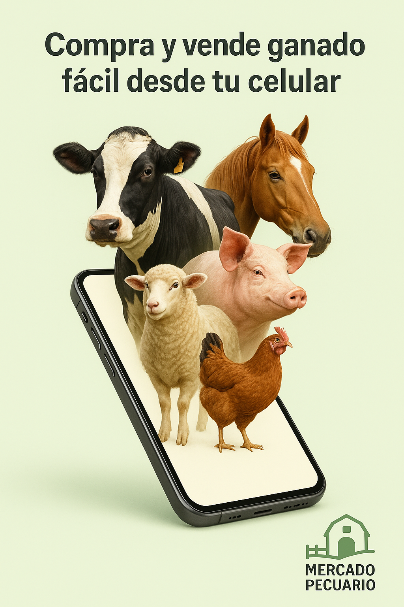

Gratis. Sin intermediarios. Trato directo entre productores.
Disponible para teléfonos Android.
Anuncia tu negocioPuedes publicar bovinos, equinos, cerdos, cabras, ovejas, aves y más. Los compradores filtran por tipo de animal y por ubicación para encontrar lo que buscan cerca de ellos.
Mercado Pecuario fue creado por el Dr. José Adán Rivera Acevedo, nicaragüense nacido en Matagalpa y criado en Managua. Pasó 15 años en Alemania, donde estudió hasta obtener un doctorado en Ciencias de la Computación. También es ganadero: su vínculo con el campo viene de familia, de cuando de niño acompañaba a su abuelo en su finca, entre Matagalpa y Jinotega.
Por esa doble experiencia sabe lo difícil que puede ser vender o comprar animales en Nicaragua: hay que depender de intermediarios, perder días viajando o conformarse con los compradores de la zona. En 2025 lanzó Mercado Pecuario, una app sencilla y gratuita para que cualquier productor, desde un pequeño finquero hasta una hacienda grande, pueda mostrar sus animales a compradores de todo el país y de la región. Ese mismo año, Mercado Pecuario fue finalista del Hackathon Nicaragua 2025.
El proyecto busca que la tecnología trabaje para el campo nicaragüense y centroamericano: que el productor tenga más opciones, que reciba un precio justo y que el dinero de la venta llegue completo a sus manos.

“Por Mercado Pecuario he logrado vender hasta tilapias.”

Publicar animales es gratis. Si tienes un negocio relacionado con la ganadería, como insumos veterinarios, alimento, transporte de ganado, maquinaria, servicios técnicos o agroservicios, puedes anunciarte en la app con un costo de publicación.
Tu anuncio llega directamente a productores y compradores de ganado en toda la región: el público que sí necesita lo que ofreces.
Pide información y tarifas a info@mercadopecuario.com
Mercado Pecuario en breve:
Mercado Pecuario es una aplicación gratuita para Android que conecta a compradores y vendedores de ganado y otros animales en Centroamérica. Los productores publican sus animales con foto, precio y ubicación, y negocian directamente con los interesados por WhatsApp, sin intermediarios ni comisiones. Fue lanzada en Nicaragua en 2025 por el Dr. José Adán Rivera Acevedo, ganadero nicaragüense y doctor en Ciencias de la Computación formado en Alemania. Fue finalista del Hackathon Nicaragua 2025 y ya supera las 300 instalaciones.
En los medios:
Material para descargar:
Para entrevistas, datos o fotos escribe a info@mercadopecuario.com con el asunto “Prensa”.
¿Tienes dudas sobre cómo publicar, buscar animales o necesitas ayuda con tus anuncios? Escríbenos. Si tienes tu Anuncio ID, inclúyelo para atenderte más rápido.
Correo: info@mercadopecuario.com
Al utilizar Mercado Pecuario, aceptas estos términos y te comprometes a mantener respeto y responsabilidad en tus publicaciones. Eres responsable de la veracidad y legalidad de toda la información que compartas.
No se permite contenido falso, engañoso o ilegal, ni aquel que vulnere derechos de terceros (derechos de autor, marcas, privacidad o imagen) o que promueva fraude o violencia.
Las transacciones o acuerdos fuera de la plataforma son responsabilidad exclusiva de las partes; Mercado Pecuario no se hace responsable por dichos acuerdos ni por pérdidas derivadas de ellos.
Nos reservamos el derecho de moderar, editar, ocultar o eliminar contenido que infrinja estos términos, así como suspender o bloquear cuentas reincidentes.
Puedes reportar publicaciones o usuarios mediante los canales disponibles.
Podemos actualizar estos Términos en cualquier momento; el uso continuo de la plataforma implica la aceptación de las versiones vigentes.
En Mercado Pecuario, la privacidad y protección de datos es prioritaria. La aplicación no recopila ni comparte información personal sensible sin consentimiento expreso.
Los datos voluntarios (nombre, teléfono, ubicación o fotos) se usan exclusivamente para operar la app: mostrar anuncios y facilitar el contacto entre compradores y vendedores.
No compartimos datos personales con terceros para fines comerciales. En la aplicación no rastreamos actividad fuera de la plataforma ni usamos analítica de terceros sin consentimiento previo.
Este sitio web (mercadopecuario.com) utiliza Google Tag Manager para obtener estadísticas generales de visitas, como el número de visitas y las páginas consultadas. Estas estadísticas no se usan para identificarte personalmente.
La información publicada (anuncios, fotos, descripciones) es visible públicamente y cada usuario es responsable del contenido.
Puedes solicitar la eliminación de tus datos escribiendo a info@mercadopecuario.com.
Esta política puede actualizarse por cambios legales o de transparencia.